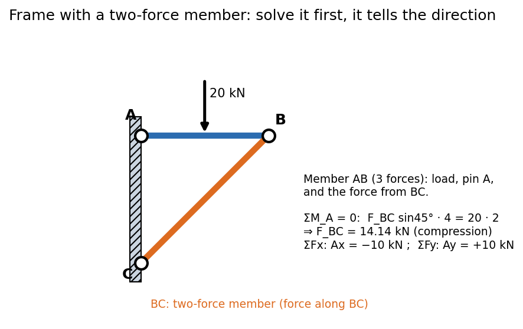

Frames and Machines
A truss has only two-force members; a frame or machine contains at least one multi-force member (three or more forces, or couples). Frames hold loads; machines transmit and amplify forces (pliers, a toggle clamp). To solve them you dismember the structure, draw an FBD for every piece, and let Newton's third law pair up the forces at each pin: equal and opposite on the two parts.
Procedure
- Overall FBD first (if the supports are the only unknowns): gives external reactions without touching the pins.
- Identify two-force members: their force is along the line through their pins. Solve for them in terms of one unknown.
- Dismember: draw each multi-force member separately; at a shared pin the force on one member is the opposite of the force on the other (third law). Be consistent with directions.
- Write 3 equations per rigid body (2-D) and solve; count unknowns and equations first.
- Check with the overall FBD.

Figure: Horizontal member AB (pinned to the wall at A) is held up by member BC, pinned to the wall at C. BC carries force only at its two pins, so it is a two-force member and its force acts along BC at . Taking moments of AB about A leaves one unknown.
🎯 Predict first: does the two-force member BC pull on B or push on it?
It pushes up and out (). AB sags under its load, and BC must resist from below; a bar below a joint holding a load up is in compression. The moment equation (positive answer for a compressive force) confirms it.
Method (a quick algorithm)
flowchart TD
A["overall FBD: external reactions"] --> B["mark the two-force members"]
B --> C["dismember: one FBD per multi-force part"]
C --> D["third law at each pin: equal and opposite"]
D --> E["3 equations per part, solve"]
E --> F["check with the overall FBD"]
Worked example
🔬 Frame of the figure: kN at the midpoint of AB; AB is m; C is m below A
BC is two-force along . Moments about A for AB: kN (compression). Its components on B: kN up and kN away from the wall. So the pin A must supply kN (towards the wall) and kN. Check: on AB: ✓; : ✓; and the overall frame: moments about C also close.
⚠️ Applying the same force twice at a pin
Put the pin's force on one member only, or draw the pin as a separate small body. And never forget that the pin force on the second member is the reverse.
💥 Putting a load that acts on a pin onto one member by default
If a load acts directly at a pin shared by three parts, decide explicitly which member (or the pin) carries it; stating it prevents a missing or doubled load.
Quick quiz
Q1. Why solve the two-force member first?
Its direction is known, so it adds only one unknown (the magnitude) instead of two components.
Q2. Pliers: handle length cm, jaw length cm from the pin. What force amplification?
Moments about the pin: , so the jaw force is the hand force. The pin also takes .
Connections
- Prerequisites: Free-Body Diagrams and Equilibrium of Rigid Bodies, Plane Trusses - Method of Joints and Sections
- Next: Distributed Loads and Equivalent Point Loads
- Cross-domain: KDoMs - MOC (mechanisms are machines in motion; static force analysis is the limit); Gears, Transformers and Reflected Impedance (force/lever amplification is "reflected load").
Self-check
Metadata
- Status: draft · Type: concept · Difficulty: intermediate
- Course map: Engineering Mechanics - MOC